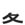

|  | eachbottom |
| KAKU |
|
Allright! Let's call that weird thing on top your nose. You'll notice that it looks a LOT like the kanji for 'been a long time' : 久. But 久's diagonal lines do NOT cross. 各's diagonal lines DO cross. So! Now we are ready to do our mnemonic, which will help us remember the difference between the two kanji: Each COCK in your mouth crosses your nose. |
| 各駅停車 |
local train
★★☆☆☆
sure this is a scary and long word, but if you live here, you'll use it everyday： It means "local train" (literally, "stopping at each station train") |
| 各々 のxxx |
each xxx in its own way. ★★☆☆☆ 1/2 KANA each thing in its own way. 各々考え方が違います。 (everyone thinks in their own way/ everyone has their own opinion). |
| 各 ｘｘｘ |
each xxx respectively ★☆☆☆☆ PRE PREFIX- you can put 各 in front of a noun to make it mean "each one, respectively"：each place, each thing, person. |
| Meaning | Hint | Radical | |
|---|---|---|---|
| 及 | reach / amount to | right side BUMPY | |
| 各 | each | CROSSed lines | |
| 久 | been a long time | bottom GOES APART |
grasp - the right line has what looks like BUMPS on it - those bumps are the WHITE KNUCKLES of the grasping hand.
久's diagonal lines do NOT cross - they go APART. 各's diagonal lines DO cross. So you can say:
Each time we met,you double-CROSSed me, so it's been a long time since we've been apart.
|
many kinds, diverse
様々な 色々な 諸々の 各々の 多様な |
 KANJIDAMAGE
KANJIDAMAGE
 Number
610
Number
610